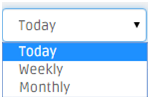
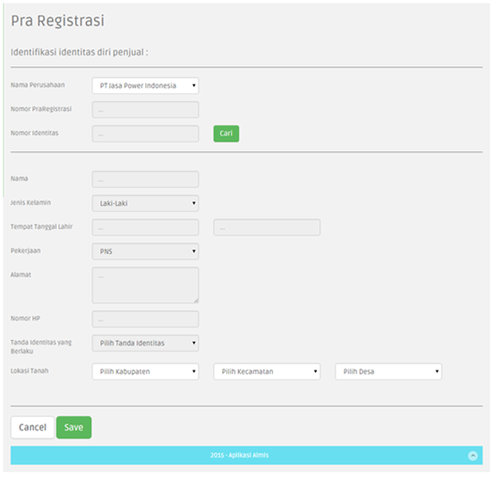

3.1.1. Pra Registrasi
Untuk menuju ke halaman Pra Registrasi, tahapan yang dilakukan adalah sebagai berikut:
- Klik menu Land Compensation > Pra Register
- Akan tampil halaman Pra Registrasi seperti gambar berikut
1. User melakukan pencarian data List Pra Registrasi berdasarkan pada list drop down nama perusahaan.
- Pilih salah satu dari list dropdown nama perusahaan.
- Maka akan ditampilkan list Pra Registrasi berdasarkan perusahaan yang dipilih
2. User melakukan pencarian data List Pra Registrasi berdasarkan periode pada list drop down.

- Pilih salah satu dari list dropdown periode.
- maka akan ditampilkan list Pra Registrasi berdasarkan periode yang dipilih
3. User melakukan pencarian data List Pra Registrasi berdasarkan Date Awal dan Date Akhir, dengan mengisi kedua kolom kemudian menekan button Search.
Jika salah satu kolom date tidak diisi maka akan muncul warning. dan data tidak akan ditampilkan.
4. Untuk melakukan pencarian / filter berdasarkan isi kolom yang dipilih,dengan cara ketik seperti yang di tunjukan gambar di bawah ini:
5. Button Add New untuk menambah data baru di tabel Pra Registrasi
- Klik button Add New, maka akan ditampilkan halaman untuk melakukan Pra Registrasi

- Klik button Cari maka akan tampil tabel pencarian , user dapat melakukan pencarian dengan memasukkan keyword pencarian.
- misalnya mencari dengan keyword nama "joko" , ketik nama pada searchbox lalu klik cari, maka akan tampil record "joko"
- Klik pada record, maka record akan muncul di tabel Pra Registrasi.
Jika hasil pencarian tidak menampilkan data record yang dicari, user dapat menambah record baru dengan cara:
- Klik button Tambah Baru, maka akan tampil halaman Master Identitas
- Isilah dan lengkapi data pada form di halaman Master Identitas.
- Klik Save untuk menyimpan data.
- Jika anda tidak ingin menyimpan nya Klik Cancel. untuk menutup halaman Master Identitas.
- Data yang disimpan akan tampil di tabel pada halaman Pra Registrasi.
6. Field Action terdapat Link view, edit, delete untuk record di halaman Pra Registrasi
berfungsi untuk :
view: melihat detail informasi data dari record yang dipilih
- Klik linkview, akan ditampilkan halaman view Pra Registrasi
edit: mengubah detail informasi data dari record yang dipilih
- Klik link edit, akan ditampilkan halaman edit Pra registrasi
- Pilih Status Pra Registrasi menjadi Lanjut untuk masuk ke proses transaksi selanjutnya.
- Klik button Save untuk menyimpan perubahan.
- Klik button Cancel bila tidak ingin menyimpan perubahan.
delete: menghapus data record yang dipilih
- Klik link delete, maka akan tampil halaman delete Pra Registrasi
- Klik button Delete untuk manghapus data, atau
- Klik button Cancel jika tidak ingin menghapus data.
- Setelah user menekan button Delete maka akan muncul pemberitahuan seperti gambar di bawah ini :
- Apabila data berhasil di delete maka akan mucul pemberitahuan seperti gambar di bawah ini :
7. Records From.. to.. of.. : menunjukkan jumlah record .